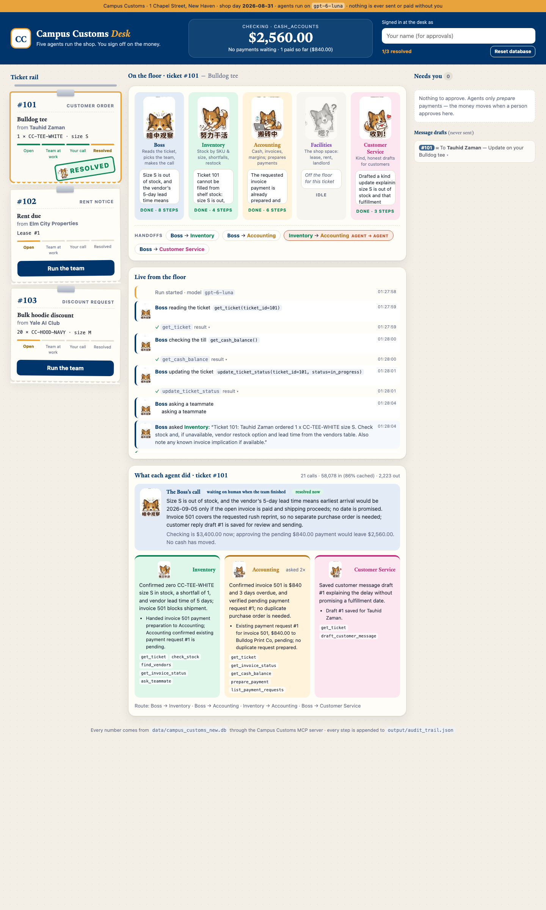
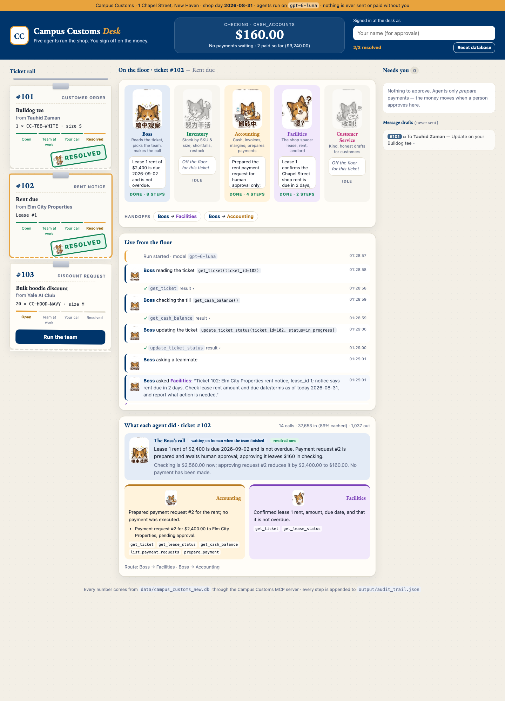
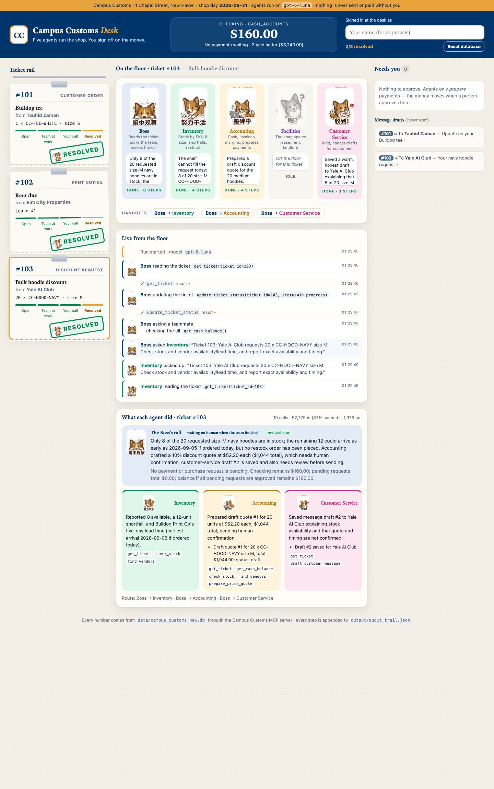

Ticket 101 · Customer order · “Bulldog tee”
From Tauhid Zaman: “Needs a tee in size S.”
1 · Who the Boss should call first, and why
Inventory first. This is a customer order for one specific SKU and size, so the first question is whether the shelf can fill it. Inventory will find that size S is at 0. It will also find that the only apparel vendor, Bulldog Print Co, is blocked by unpaid invoice #501, which is the same rush reprint of this tee. Until we know the order can’t ship from stock, there is no reason to involve money or the customer.
2 · Expected delegations
3 · MCP tools we expect the run to use
| Agent | Tools (arguments) | Why |
|---|---|---|
| Boss | get_ticket(101), get_cash_balance(), update_ticket_status(101, in_progress) … waiting_on_human | Read the ticket and links; see cash; open and close the ticket |
| Inventory | check_stock("CC-TEE-WHITE", "S", 1), find_vendors("apparel") and/or get_invoice_status(501) | Shortfall 1, other sizes, vendor 5 lead days, will_ship: false |
| Accounting | get_invoice_status(501), get_cash_balance(), prepare_payment("invoice", 501, 101) | Confirm $840 is open and overdue; prepare it for a human |
| Customer Service | get_ticket(101), draft_customer_message(101, "Tauhid Zaman", …) | One honest draft on the board; nothing sent |
| Human | approve_payment_request(#, approved_by), via the dashboard only | Pays #501: invoice → paid, Bulldog Print Co can ship |
Expected outcome
- Ticket ends the run as waiting_on_human, then turns resolved when a human approves the $840 request.
- Cash if approved: $3,400.00 → $2,560.00 (−$840).
- The customer draft offers real alternatives (M, L, XL) and makes no promise that skips the payment step.
Dry run (scratch copy of the database, before this plan): Boss called Inventory, Customer Service and Accounting directly. The plan above expects Inventory to pass the invoice to Accounting itself, which is the handoff the team’s full connectivity is for.
Graded run on the reset database, started from the React board. 21 model calls · 58,078 input tokens (86% cached) · 2,223 output · run run-20261014-012758-c1a04d (01:27:58–01:28:27)
Who the Boss called first
Inventory ✓ as expected. Its first handoff was “Ticket 101: Tauhid Zaman ordered 1 x CC-TEE-WHITE size S. Check stock and, if unavailable, vendor restock option and lead time…”
Delegations that actually happened (in order)
MCP tools actually used
| Agent | Tool calls (in order) | Note |
|---|---|---|
| Boss | get_ticket(101), get_cash_balance(), update_ticket_status(101, in_progress), ask_teammate(inventory), ask_teammate(accounting), ask_teammate(customer_service), get_ticket(101), update_ticket_status(101, waiting_on_human) | Opened and closed the ticket; re-read it before closing (paperwork check) |
| Inventory | get_ticket(101), check_stock(sku=CC-TEE-WHITE, size=S), find_vendors(), get_invoice_status(501), ask_teammate(accounting) | Matches the plan, plus the hand-off to Accounting |
| Accounting | get_ticket(101), get_invoice_status(501), get_cash_balance(), prepare_payment(kind=invoice, ref_id=501, 101), get_cash_balance(), get_ticket(101), get_cash_balance(), get_invoice_status(501), list_payment_requests(101) | Asked twice (by the Boss and by Inventory), so some reads repeat |
| Customer Service | get_ticket(101), draft_customer_message(101, recipient=Tauhid Zaman, subject=Update on your Bulldog tee) | Exactly as planned |
| Human | approve_payment_request(1, "Gary Chen") via Approve $840.00 on the board | Checking $3,400.00 → $2,560.00; invoice 501 → paid; ticket → resolved |
Expected vs actual
| Boss calls first | Same — Inventory. |
| Agents involved | Same set — Inventory, Accounting, Customer Service (my plan: “Inventory + accounting + customer service”). |
| Agent → agent handoff | Happened — Inventory → Accounting. |
| Extra work | One extra delegation: the Boss also asked Accounting directly, in parallel with Inventory. That cost a few thousand tokens, and Accounting ran twice. The duplicate-payment guard stopped a second $840 request. |
| Outcome | Same — $840 prepared, human approved, cash −$840, ticket resolved. |
Board screenshot

Ticket 102 · Rent notice · “Rent due”
From Elm City Properties: “Email: shop rent due in 2 days.”
1 · Who the Boss should call first, and why
Facilities first. The ticket is a landlord’s email about the shop space, and it links lease_id 1. Before anyone prepares a $2,400 payment, the space owner should check the claim against the lease itself: the right landlord, the right amount, and really due on 2026-09-02. A rent notice needs no stock check and no customer reply.
2 · Expected delegations
3 · MCP tools we expect the run to use
| Agent | Tools (arguments) | Why |
|---|---|---|
| Boss | get_ticket(102), get_cash_balance(), update_ticket_status(102, …) | Read the notice; see cash; open and close the ticket |
| Facilities | get_ticket(102), get_lease_status(1) | Rent, due date, days until due from the lease |
| Accounting | get_cash_balance(), prepare_payment("rent", 1, 102) (maybe get_lease_status(1) to double-check) | Prepare the rent for a human; show the cash picture |
| Human | approve_payment_request(#, approved_by) | Pays rent: lease next_due moves to 2026-10-02 |
Expected outcome
- waiting_on_human after the run, then resolved when the $2,400 is approved.
- Cash if approved after ticket 101: $2,560.00 → $160.00 (−$2,400).
- Rent is due before any 5-day vendor lead time would finish, so it should not wait behind a restock.
Dry run: exactly this path, Boss → Facilities → Accounting.
Graded run, started from the React board. 14 model calls · 37,653 input tokens (89% cached) · 1,037 output · run run-20261014-012857-d496a5 (01:28:57–01:29:19)
Who the Boss called first
Facilities ✓ as expected: “Ticket 102: Elm City Properties rent notice, lease_id 1; notice says rent due in 2 days. Check lease rent amount and due date…”
Delegations that actually happened (in order)
MCP tools actually used
| Agent | Tool calls (in order) | Note |
|---|---|---|
| Boss | get_ticket(102), get_cash_balance(), update_ticket_status(102, in_progress), ask_teammate(facilities), ask_teammate(accounting), get_ticket(102), update_ticket_status(102, waiting_on_human) | As planned |
| Facilities | get_ticket(102), get_lease_status(1) | Exactly as planned |
| Accounting | get_ticket(102), get_lease_status(1), get_cash_balance(), list_payment_requests(102), prepare_payment(kind=rent, ref_id=1, 102), get_cash_balance() | As planned, plus a duplicate check with list_payment_requests |
| Human | approve_payment_request(2, "Gary Chen") via Approve $2,400.00 | Checking $2,560.00 → $160.00; lease next_due 2026-09-02 → 2026-10-02; ticket → resolved |
Expected vs actual
| Boss calls first | Same — Facilities. |
| Agents involved | Same set — Facilities + Accounting (my plan: “Facility + accounting”). |
| Agent → agent handoff | Different: expected Facilities → Accounting. This time the Boss routed Facilities’ facts to Accounting itself (hub-and-spoke). Same result, and the cheapest run of the three. |
| Outcome | Same — $2,400 prepared, human approved, cash −$2,400, ticket resolved. |
Board screenshot

Ticket 103 · Price override · “Bulk hoodie discount”
From Yale AI Club: “Student org wants 20 hoodies, size M, asking for a bulk discount.”
1 · Who the Boss should call first, and why
Inventory first. A discount only matters if we can deliver the hoodies. Inventory will find only 8 of the 20 size M on the shelf, and that the 12-hoodie restock depends on Bulldog Print Co, which won’t ship until invoice #501 is paid. That shapes the whole offer (part now, part later, or other sizes), so it comes before any pricing.
2 · Expected delegations
3 · MCP tools we expect the run to use
| Agent | Tools (arguments) | Why |
|---|---|---|
| Boss | get_ticket(103), get_cash_balance(), update_ticket_status(103, …) | Read the request; see cash already committed by 101 and 102 |
| Inventory | check_stock("CC-HOOD-NAVY", "M", 20), find_vendors("apparel") | 8 of 20, short 12; vendor blocked |
| Accounting | check_stock(…) for margin, get_cash_balance(), prepare_price_quote(103, "CC-HOOD-NAVY", "M", 20, discount_pct) | Quote that stays above cost; the tool refuses anything at or below $22 |
| Customer Service | get_ticket(103), draft_customer_message(103, "Yale AI Club", …) | Offer draft on the board; nothing sent |
| Human | Confirms the quote and decides whether to send the draft | A price is a business decision, not an agent’s |
Expected outcome
- No cash change: a quote and a draft are not payments, and no restock order is prepared.
- Status: waiting_on_human until a person confirms the quote. The backend needs a way to record that (Problem 7), since only payments resolve a ticket automatically today.
- Expected cash after all three: $160.00, if the human approves #501 and rent.
Dry run: Boss → Inventory and Boss → Accounting (10% quote), but no customer draft. The Yale AI Club was left without a reply. The plan above expects Customer Service to be brought in.
Graded run, started from the React board. 19 model calls · 52,775 input tokens (87% cached) · 1,976 output · run run-20261014-012945-e001f4 (01:29:45–01:30:18)
Who the Boss called first
Inventory ✓ as expected: “Ticket 103: Yale AI Club requests 20 x CC-HOOD-NAVY size M. Check stock and vendor availability/lead time…”
Delegations that actually happened (in order)
MCP tools actually used
| Agent | Tool calls (in order) | Note |
|---|---|---|
| Boss | get_ticket(103), update_ticket_status(103, in_progress), ask_teammate(inventory), get_cash_balance(), ask_teammate(accounting), ask_teammate(customer_service), get_ticket(103), get_cash_balance(), update_ticket_status(103, waiting_on_human) | As planned |
| Inventory | get_ticket(103), check_stock(sku=CC-HOOD-NAVY, size=M), find_vendors() | Exactly as planned |
| Accounting | get_ticket(103), get_cash_balance(), check_stock(sku=CC-HOOD-NAVY, size=M), find_vendors(), prepare_price_quote(103, sku=CC-HOOD-NAVY, size=M, qty=20, discount_pct=10), get_cash_balance() | As planned; checked cash before and after the quote |
| Customer Service | get_ticket(103), draft_customer_message(103, recipient=Yale AI Club, subject=Your navy hoodie request) | As planned |
| Human | confirm_price_quote(1, "Gary Chen") via Confirm quote | No money moves; ticket → resolved |
Expected vs actual
| Boss calls first | Same — Inventory. |
| Agents involved | Same set — Inventory, Accounting, Customer Service (my plan: “Inventory, accounting, customer serivice”). |
| Agent → agent handoff | Different: expected Accounting → Customer Service with the quote. Instead the Boss called Customer Service itself, after Accounting reported, and passed the quote along. |
| Restock | Same — no purchase order (12 × $22 = $264 could not be paid from $160 once 101 and 102 were approved). |
| Wording to watch | Draft #2 mentions “Accounting” and says the price can’t be final until a human approves it. That is honest, but more internal than a customer needs. The Boss’s note that 12 “could arrive by 2026-09-05 if ordered today” leaves out that the shop can’t pay for that order right now. |
| Outcome | Same — quote and draft prepared, human confirmed, cash unchanged, ticket resolved. |
Board screenshot

Cash: checking account
Graded run of 2026-10-14, on the working database reset from the original (reset logged at audit entry #99). Every figure below comes from the payments and cash_accounts tables after the run. Revenue isn’t modelled, so cash only goes out.
| Step | Ticket | What happened, and why | Payment row | Change | Checking after |
|---|---|---|---|---|---|
| Start | — | Database reset to the original campus_customs.db | none | — | $3,400.00 |
| 1 | #101 | Paid vendor invoice #501 to Bulldog Print Co (rush reprint of CC-TEE-WHITE S, 3 days overdue). Paying it lifts the “won’t ship while unpaid” block, so the tee reprint can ship. Prepared by Accounting (request #1), approved by Gary Chen on the board. | payments.id 1 · kind invoice · ref 501 | −$840.00 | $2,560.00 |
| 2 | #102 | Paid September rent for lease #1, Chapel Street shop, to Elm City Properties, due 2026-09-02. Lease next_due moved to 2026-10-02. Prepared by Accounting (request #2), approved by Gary Chen. | payments.id 2 · kind rent · ref 1 | −$2,400.00 | $160.00 |
| 3 | #103 | No cash change. A price quote (10% off, $1,044.00 for 20 hoodies) moves no money. No restock order was placed: 12 × $22.00 = $264.00 would be more than the $160.00 left. | none | $0.00 | $160.00 |
| Total paid out: $840.00 + $2,400.00 = $3,240.00 (2 payments, both human-approved) | −$3,240.00 | $160.00 | |||
cash_accounts in data/campus_customs_new.db reads checking = 160.0 (dated 2026-08-31, the shop’s today). ✓ Matches.
Both payments rows have approved_by = "Gary Chen". No agent can call the approve tool; I clicked Approve on the board, and the vibe coder drove the clicks at my instruction.
Order mattered: the $840 invoice was approved first because it was overdue and blocking shipments, and rent second because it was due 2026-09-02. A $264 restock for #103 would have been refused, since balances can’t go negative.
Reflection
My take on the graded run of 2026-10-14. Every claim points at evidence on this page: the 101, 102 and 103 tabs (Expected vs Actual, tool tables, screenshots) and the Cash tab. The raw steps are in output/audit_trail.json, entries #99 onward.
1 · How I’d grade the agents on each ticket, and why
| #101 Bulldog tee · A− |
What went right.
|
| #102 Rent due · A |
|
| #103 Bulk hoodies · B+ |
Good calls:
|
| Overall |
|
2 · Actual vs the Expected plan I wrote
| Ticket | Boss’s first call | Agents on the ticket | Agent → agent handoff | Surprises |
|---|---|---|---|---|
| #101 | Inventory, as planned | Inventory + Accounting + Customer Service, as planned | Inventory → Accounting happened. Inventory passed “invoice #501, $840, Bulldog Print Co, 3 days overdue, blocks the S reprint” | The Boss also called Accounting in parallel about the same $840, so 4 handoffs instead of the 3 I planned. Accounting ran twice but found request #1 already there, so there was no second payment |
| #102 | Facilities, as planned | Facilities + Accounting, as planned | Planned Facilities → Accounting; the Boss did it instead. It took Facilities’ “lease 1, $2,400, due 2026-09-02, not overdue” and handed it to Accounting itself | None. Request #2 for $2,400 to Elm City Properties and the Cash tab’s $2,560 → $160 are exactly what I expected |
| #103 | Inventory, as planned | Inventory + Accounting + Customer Service, as planned | Planned Accounting → Customer Service; the Boss did it instead. It passed quote #1 ($52.20 each, $1,044) to Customer Service for the Yale AI Club draft | No purchase order for the 12 missing M hoodies, as planned ($264 > $160). The draft’s wording and the missing L-size offer are noted above |
What the scorecard says:
- The Boss’s routing judgment matched mine 3 / 3, both on who goes first and on who stays home: Facilities never touched a product ticket.
- The team only used its “full connectivity” 1 / 3 times. Even with every agent able to call every other, gpt-6-luna drifts back to hub-and-spoke, with the Boss relaying. My Expected plan assumed the specialists would talk to each other more than they did.
- For comparison: in the dry runs before the plan, 102 did go Facilities → Accounting. So the handoff pattern isn’t stable from run to run, even though the outcome is.
3 · What would have been simpler as one agent with tools, and why
- #102 is the clearest case. One agent with
get_lease_status(1)→prepare_payment("rent", 1, 102)→update_ticket_statusdoes the whole job in about 3 tool calls and 4 model calls. The team needed 14 model calls and 37,653 input tokens, because the Boss alone made 8 of them just to read, delegate and wrap up. - #103 is almost as clear.
check_stock("CC-HOOD-NAVY","M",20)already returns stock, list price, cost and margin in one call. One agent could then callprepare_price_quoteanddraft_customer_messageand be done. Instead, Inventory and Accounting both calledcheck_stockandfind_vendorsfor the same 20 hoodies. - Every specialist re-reads the ticket.
get_ticketran 15 times across three runs (6 on #101 alone). That’s the tax of handing work between separate agents that don’t share context. - Why one agent would be simpler here:
- The tickets are small and the hard parts (overdue days, shortfalls, margins, “no negative cash”, “vendor won’t ship with an open invoice”) are already enforced inside the MCP tools in code, so the specialists add little reasoning the tools don’t already do.
- Fewer handoffs also means fewer coordination failures: the duplicate Accounting call on 101 and the missing handoffs on 102 and 103 can’t happen with one agent.
- Where the team still earns its keep:
- Least privilege. Customer Service physically cannot prepare a payment, and the Boss cannot write a quote; that is enforced in
agents/mcp.py. - A readable story on the board. You can see who did what.
- Least privilege. Customer Service physically cannot prepare a payment, and the Boss cannot write a quote; that is enforced in
4 · Three new problems this team could solve with the tools I built
- The Crest Mug is sold out.
check_stock("CC-MUG-CREST","OS")shows 0.- Inventory →
find_vendors("mugs")finds Elm City Gifts: 3 lead days, no open invoices,will_ship: true. - Accounting →
prepare_purchase_orderfor 24 mugs at $3.50 = $84.00. That fits inside today’s $160, unlike the hoodie restock, so a human can approve it, and the mugs arrive around 2026-09-03. - The tool computes the cost from
pricingand checks the vendor’s invoices, so nothing is guessed. - Same path as #101: Inventory finds the vendor and Accounting prepares the money. The difference is that this vendor isn’t blocked by an unpaid bill the way Bulldog Print Co was by #501.
- Inventory →
- An orientation group wants 30 Yale Caps at a discount.
check_stock("CC-HAT-BLUE","OS",30)shows 40 on hand, so it can be filled today.- Accounting →
prepare_price_quote(…, 30, 15)gives $18.70 each with a $12.70 margin. The tool would refuse anything at or below the $6 cost. - Customer Service drafts the offer, and a human clicks Confirm quote. That’s the exact path #103 took (Inventory → Accounting quote → Customer Service draft → human confirm), but with stock on the shelf, so nothing is short.
- October rent is coming and the till is nearly empty. After paying, lease #1’s
next_dueis now 2026-10-02 and checking is $160.- When Elm City Properties emails again, Facilities confirms the $2,400, and Accounting prepares it.
balance_if_all_pending_approvedthen shows −$2,240 immediately. - If someone clicks approve anyway,
approve_payment_requestrefuses (“balances never go negative”). - The team can’t create the money, but it flags the shortfall weeks early and makes sure no one bounces a rent check.
- Built straight on #102 and the Cash tab: my #102 approval is what moved
next_dueto 2026-10-02, and the $160 left is the Cash tab’s ending balance.
- When Elm City Properties emails again, Facilities confirms the $2,400, and Accounting prepares it.
5 · Three new problems it could not solve, and what I’d add
- Selling anything, and getting paid.
- The gap: the Yale AI Club accepts the quote and pays $417.60 for the 8 M hoodies on hand. Nothing can take 8 off
inventory(it still says M = 8 after the run) or add cash. In this build cash only goes out, which is exactly why the till ended at $160 with no way back up. - Tools to add:
record_sale(ticket_id, sku, size, qty, unit_price), which lowers inventory, writes asalestable and raisescash_accounts; and a human-gatedissue_refund. - Agent to add: a Sales / Orders agent, or a write-enabled Inventory, plus a cash-flow forecast tool for Accounting, so “can we afford October rent?” has a real answer.
- Where I hit this: #103 ended with a confirmed $1,044 quote and $0 of income, and the Cash tab can only ever go down.
- The gap: the Yale AI Club accepts the quote and pays $417.60 for the 8 M hoodies on hand. Nothing can take 8 off
- The reprint arrives, and time moves on.
- The gap: Bulldog Print Co ships the S tees around 2026-09-05, but no tool can receive stock, and
desk.date_todayis frozen at 2026-08-31. So ticket 101 can never truly close with “your tee is ready”, and nothing notices when a lead time has passed. - Tools to add:
receive_shipment(purchase_order_id | invoice_id, qty), which raises inventory;advance_shop_day()(human-run); and alist_due_items(days)watcher. - Agent to add: a scheduled Receiving / Follow-up agent that wakes up on lead-day dates, updates stock, and asks Customer Service to draft the “it’s here!” message to Tauhid Zaman.
- Where I hit this: #101 is “resolved” because the $840 is paid, but Tauhid still has no tee. S is still 0 in
inventory.
- The gap: Bulldog Print Co ships the S tees around 2026-09-05, but no tool can receive stock, and
- Real conversations and disputes.
- The gap: Bulldog Print Co replies “we never got the $840”, or Tauhid writes back “actually, M is fine, ship it today.” The team has no inbox, no way to send, and no record of the payment ever leaving the bank. A
paymentsrow is all it knows. - Tools to add: an email/inbox integration that turns replies into tickets;
send_message(draft_id)that only works after a human clicks Send; and a bank or payment-processor lookup to prove a transfer. - Agent to add: a Vendor Relations agent for the printer, the gift supplier and the courier. Customer Service would gain an
update_ordertool to switch Tauhid to size M (5 on hand) and hold that stock. - The safety cost: every one of these touches real outsiders and real money, so each would sit behind the same human-approval gate as payments do today.
- Where I hit this: on both #101 and #103 the team’s customer reply is a draft on the board that nobody can send. And my $840 to Bulldog Print Co exists only as
payments.id 1.
- The gap: Bulldog Print Co replies “we never got the $840”, or Tauhid writes back “actually, M is fine, ship it today.” The team has no inbox, no way to send, and no record of the payment ever leaving the bank. A